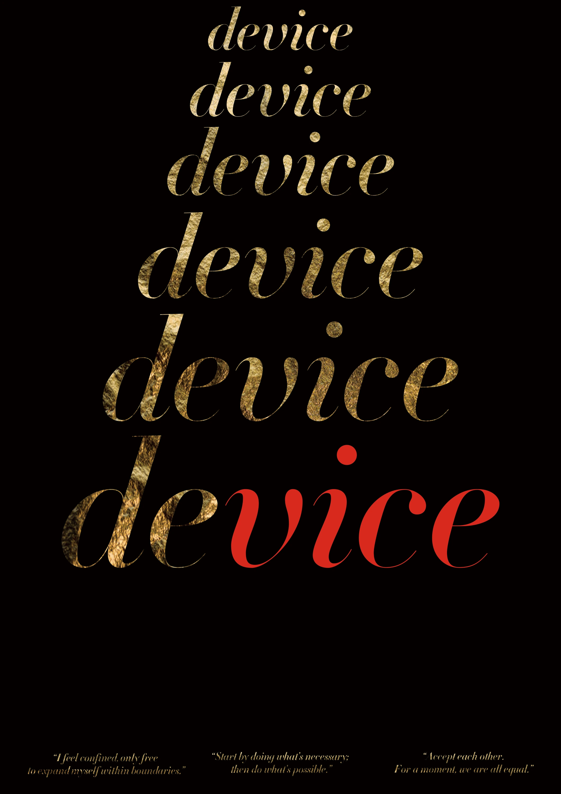
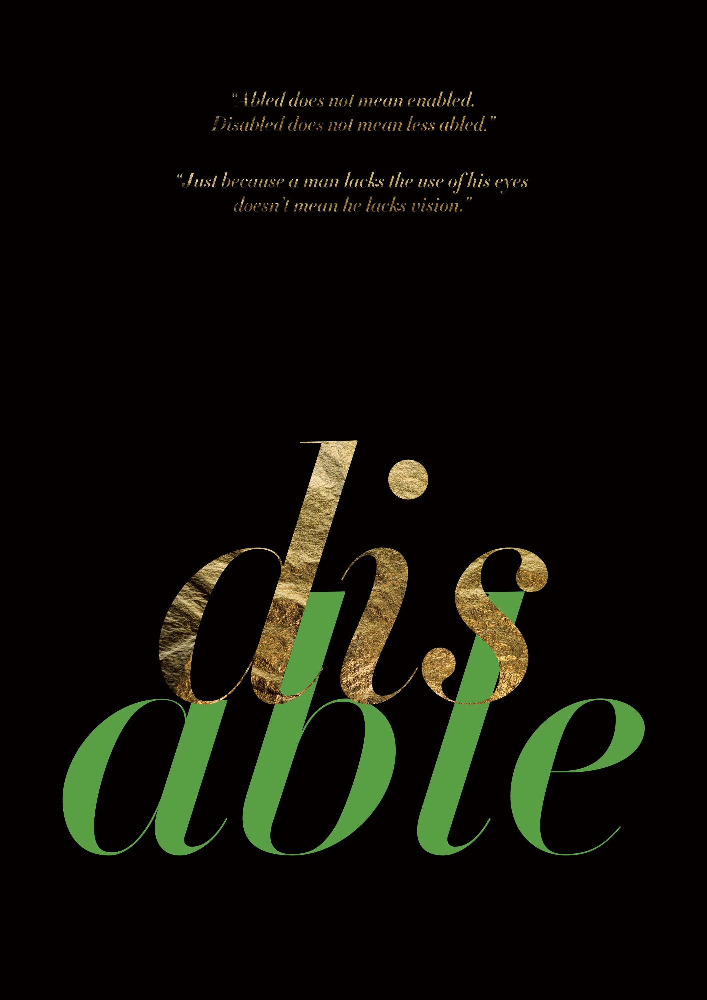
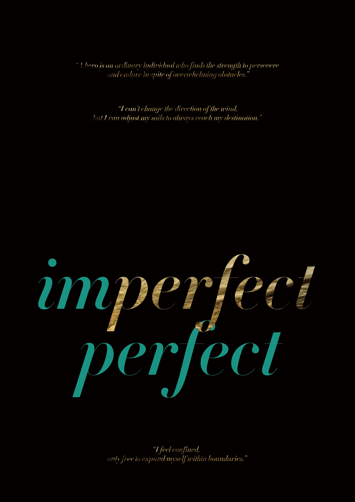
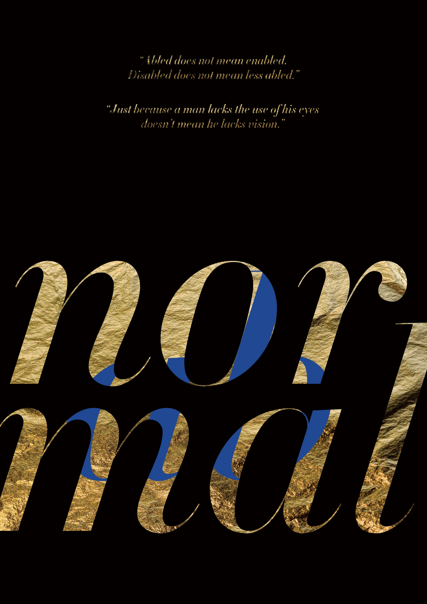
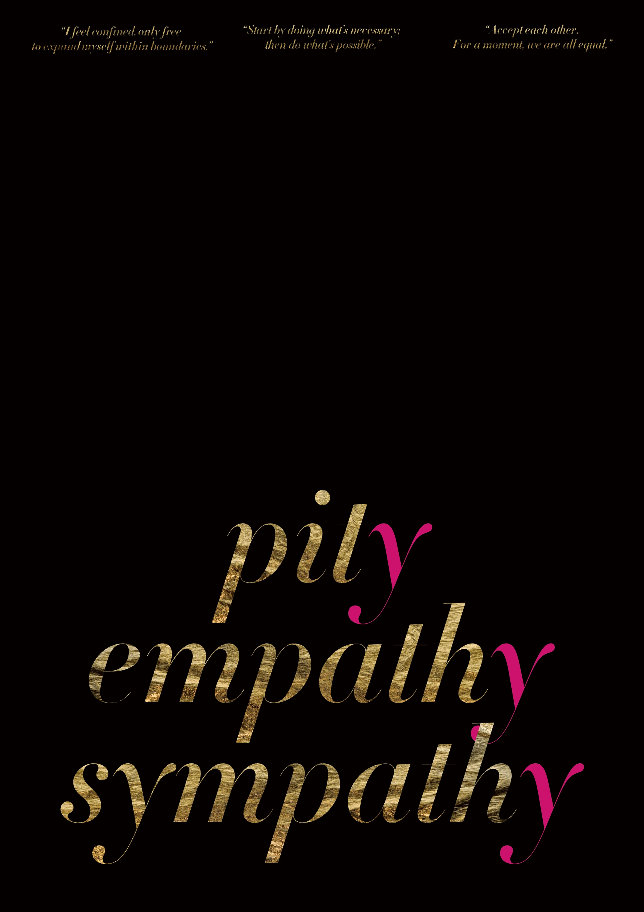
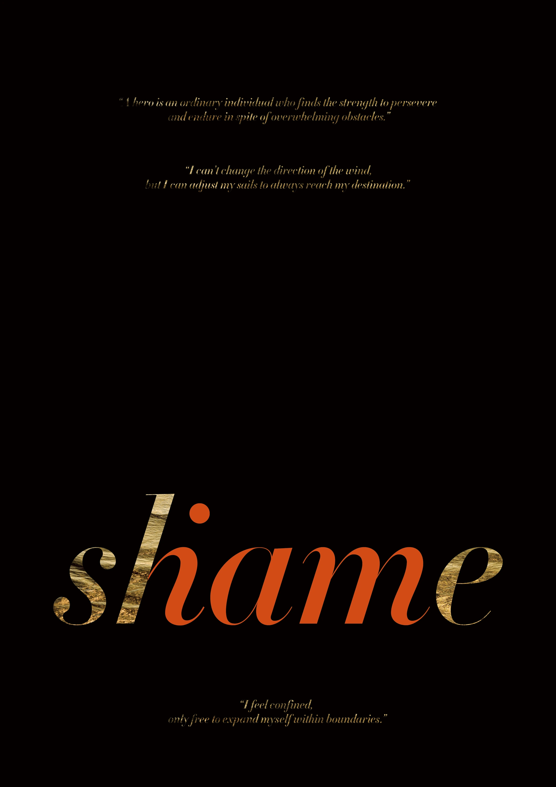

Composition：义肢与人文关怀的字体海报
这是一个从义肢设计出发，讨论技术、身体与人文关怀的字体海报项目。在参观 Wellcome Collection 时，历史义肢对人体形态的模仿引起了我的兴趣，促使我进一步研究义肢的发展及社会对残障人士的看法。我以“同情与共情”“能力与残障”等词语为切入点，通过拆分、叠加和重新排列文字，探索它们之间的意义联系。在视觉上，我将瑞士国际主义的构图与色彩方式同古典排版结合，经过多轮字体比较，选择 Didot 斜体，并加入黑色背景、放射线和金色质感，最终完成一组以文字为核心的海报。项目尝试用有限的视觉元素，引导观众思考技术进步、社会眼光与人的情感需求之间的关系。





